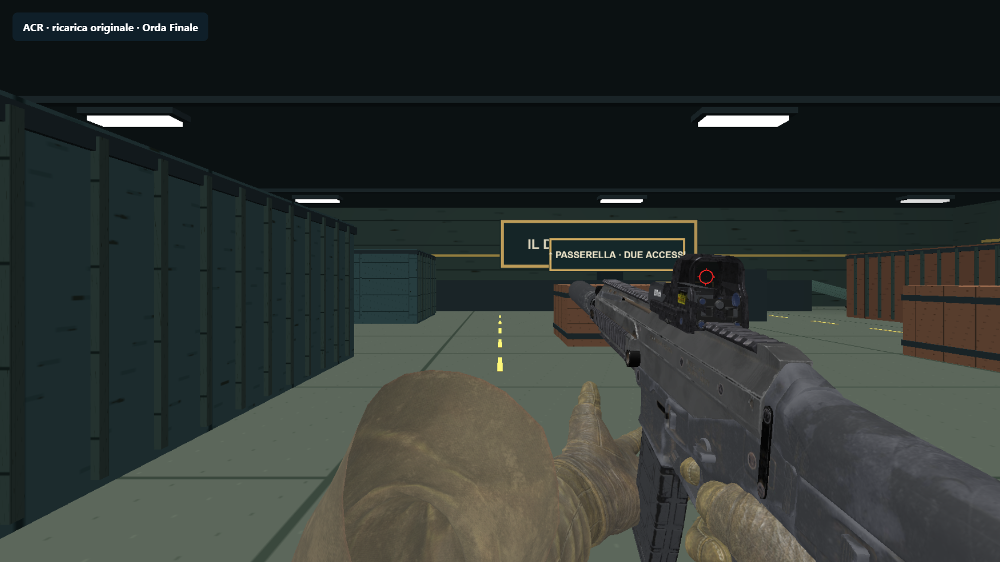
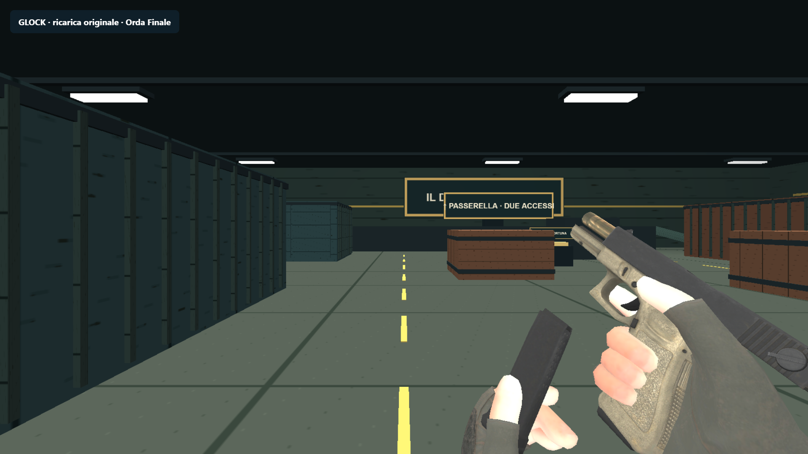
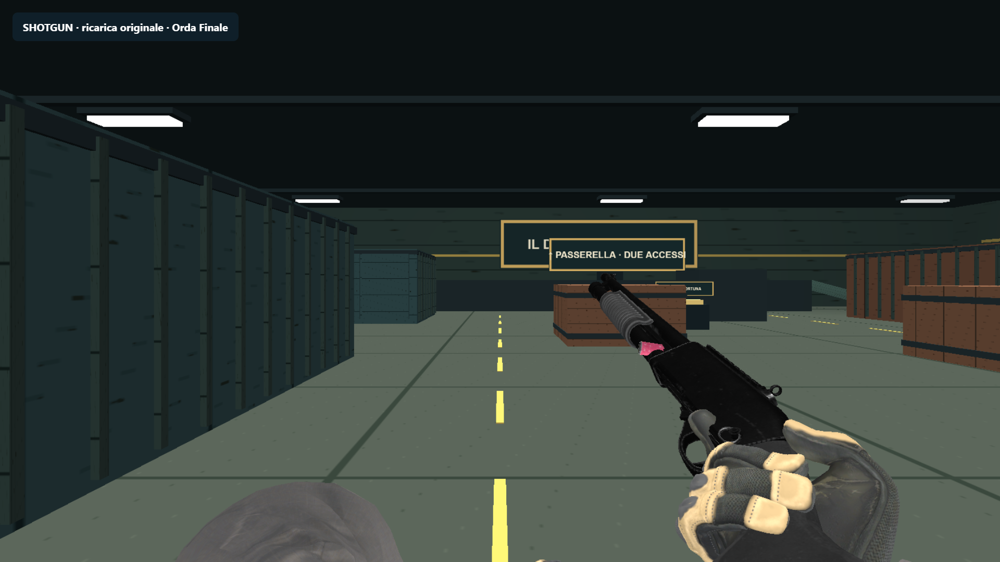
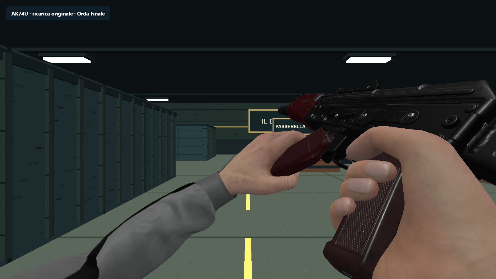

Quattro armi. Mani vere. Ricariche originali.
ACR, Glock 17, Remington 870 e AK-74U in Sparatoria e Orda Finale; sei armi precedenti preservate. 28 clip, rig indipendenti e ricarica a cartucce autoritativa.
59.9 FPS nel campione breve Orda a cinque visuali, RTX 3050 e interno 1669×939. 4–7 nemici vivi; HP aumentati solo nella fixture. Test e limiti · Party Game

ACR · cambio caricatore
Glock 17 · ricarica a vuoto
Remington 870 · cartuccia singola
AK-74U · cambio caricatoreLicenza Glock da verificare prima della pubblicazione. Nessun commit, push o deploy.